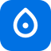
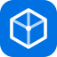

11 اختيار — من 1 لـ 6 حروف، ومن 7 لـ 11 علامات مجردة (زي كلود وشات جي بي تي: وردة، تموج، نقطة، شبكة، سداسي). كلها عيلة الأزرق بس، وشغالة فاتح وداكن. افتح الصفحة دي في المتصفح وقارن، ورد عليا برقم اللي عجبك وأنا أركبه في الموقع (أيقونة + هيدر + لاندنج).
حرف M هندسي نضيف على أزرق سيستم. أنضف اختيار — بيبان منتج حقيقي مش AI.
نفس روح شعارك الحالي بس مظبوط: نجمة واحدة بدل نجمتين، وM أكبر وأنضف.
خلفية داكنة ومدار حوالين الـ M. إحساس ذكاء وفخامة، ممتاز للدارك مود.
3 درجات صاعدة = بناء ومشاريع ونمو. gradient أزرق فقط، شكل startup.
علامة >_ صريحة. أوضح هوية "أداة كود"، ومميزة وسط منافسين AI.
حرف M حر من غير مربع، ولونه بيقلب تلقائي (أزرق غامق فاتح / فاتح داكن). أشيك في الهيدر.
6 بتلات حوالين نقطة — نفس روح علامة كلود المجردة، بس بشخصية زرقا. دافية ومميزة.
دواير متحدة المركز زي تموج المية — إحساس انتشار وتأثير، وبسيطة جدًا على أي مقاس.
نقطة/قطرة بجواها نواة — أبسط علامة في المجموعة، زي بساطة علامة OpenAI الهندسية.

نواة متوصلة بـ 6 عقد — أوضح تعبير عن "ذكاء اصطناعي" من غير ولا حرف.
مكعب سداسي بخطوط داخلية — إحساس تقني وهندسي، قريب من شعارات شركات الـ AI الكبيرة.

ترشيحي للستايل المجرد: 7 (الوردة — أدفى وأميز واحد، وروح كلود فعلًا)، 10 (الشبكة — أوضح معنى AI)، 9 (النقطة — أبسط وأنضف). وبعد ما تختار قولي وأنا أركبه في كل حتة (الأيقونة + الهيدر + اللاندنج + الأدمن).